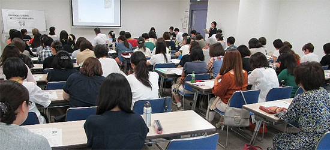
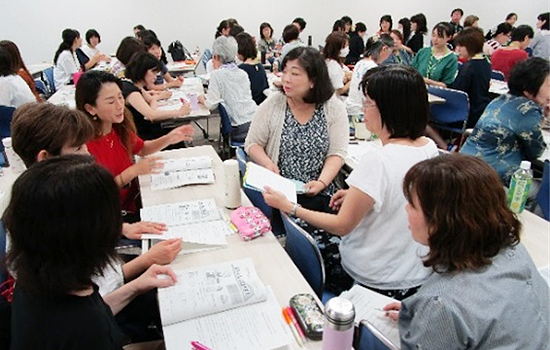

第1回組合員学習会「地域コミュニティや見守り、多世代が参加できる場づくり」報告

7月3日（水）に浦和コミュニティセンター（さいたま市）にて、埼玉県生協連の2019年度の3つの重点の課題のひとつである「子どもの貧困や生活困窮者への支援」、また地域コミュニティづくりや見守り、多世代が集まる場づくりなどについて、各生協と県内で活動する団体の取り組みを学び、相互理解を深め、今後の活動につなげることを目的に、第1回組合員学習会を開催しました。4生協72人の参加がありました。
1．開催内容

はじめに、専務理事の吉川尚彦より、学習会の開催趣旨と地域社会づくりにとりくむことの意味などについてあいさつがあり、次に、以下の順で取り組み報告、その後交流しました。
報告1
多世代コミュニティキッチン「おーい、ココロンくらぶ」 竹部初美さん
報告2
シニアの居場所づくり座談会について パルシステム埼玉 石川誠さん
報告3
子ども食堂「いっしょにたべよ」 ポトフ 大島玲子さん
報告4
子ども食堂「シャローム食堂」 北川由美子さん
報告5
フードバンク埼玉について 永田信雄さん
報告6
フードドライブ活動を通して ワーカーズコープ 石川睦子さん
報告7
埼玉協同病院小児虐待対策チームのとりくみ 木賊敦子さん
報告8
埼玉県のとりくみ 福祉部少子政策課こどもの未来応援担当 大山典宏さん
振り返りと共有（前後でグループになって交流）
2．寄せられた感想（抜粋）
いろいろなコンセプトのこども食堂の話が聞けてよかった。70代、80代のボランティアさんが多いというのに驚いた/これからは地域のつながり、居場所づくり、助け合いがとても大切になってくると感じた/シニアの居場所づくり、何も用意せずに待つのは勇気が要るが、ゆるやかさが斬新で、その後の展開を知りたいと思った/フードバンクの取り組みや、フードドライブで集まった食品の行方、生活困窮者支援について改めて理解できた/埼玉県が子ども食堂の立ち上げ支援やマッチングしていることを初めて知った/医療生協のとりくみを聞く機会が少なく、聞けてよかった。チームで対応していることに感銘した。生協のプロらしい活動だと思った。
3．今後にむけて
子ども食堂やフードバンク埼玉の見学、さらなる居場所づくりの学習などへの要望があり、実施を検討していきます。